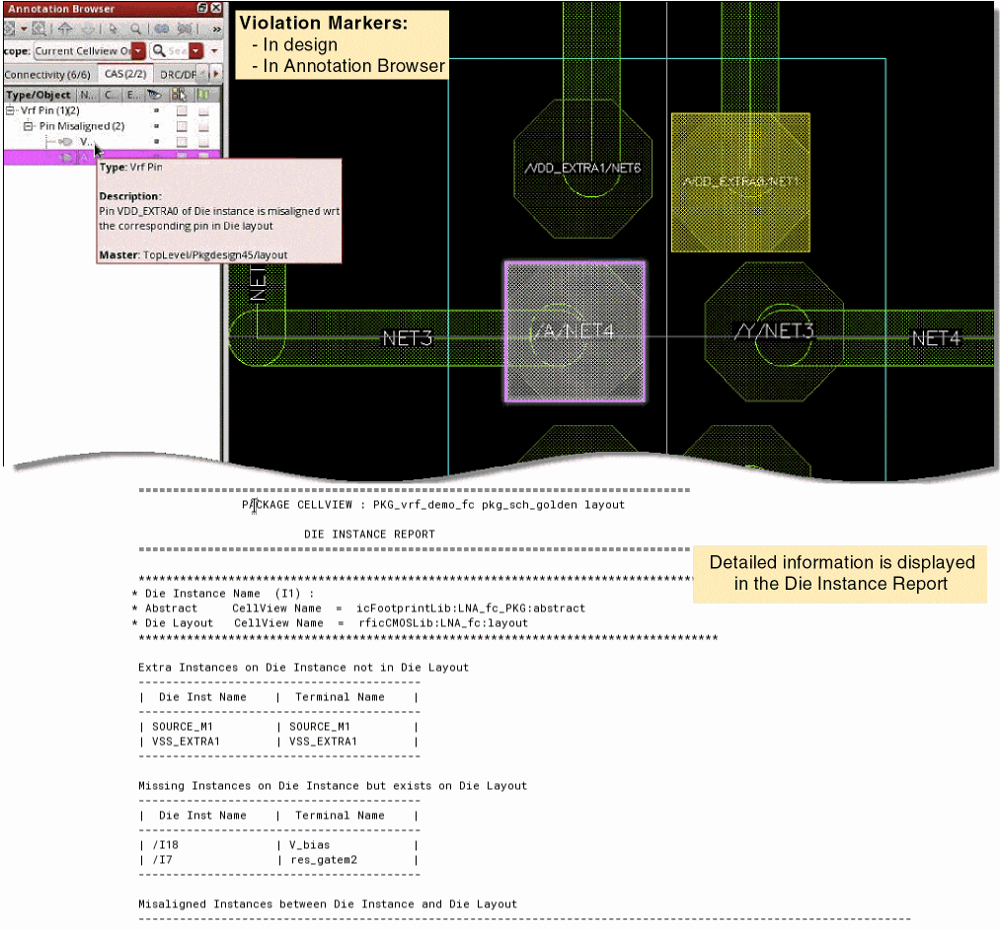

Running the LVA Checker
LVA checker can be run from the board, package, module, or die layout.
- If run from board layout, checking is done between package layout and package abstract.
-
If run from package layout, checking is done between die layout and die abstract. Module fabrics are treated the same way as package fabrics.
When a package layout and a board layout are open in Edit-in-Concert mode, you can run the LVA checker between the package layout and the package footprint in the board by selecting the ball grid array (BGA) or land grid array (LGA) instance in the package layout.
- Select the checks that the LVA checker must run in the Virtuoso RF Options form.
-
Select the required dies or instances on which the LVA checker must run.
The command runs on one or more selected dies and instances. If there is nothing selected, it runs on all the dies and instances in the design. - Choose Module – Layout Vs Abstract – Check IO Pad locations from either the package layout or the die layout to start the LVA checker.
Violation markers are created on the CAS tab of the Annotations Browser to indicate the following types of violations:
A detailed DIE INSTANCE REPORT is displayed in the CIW.

Related Topics
Checking and Fixing IO Pad Locations
Return to top